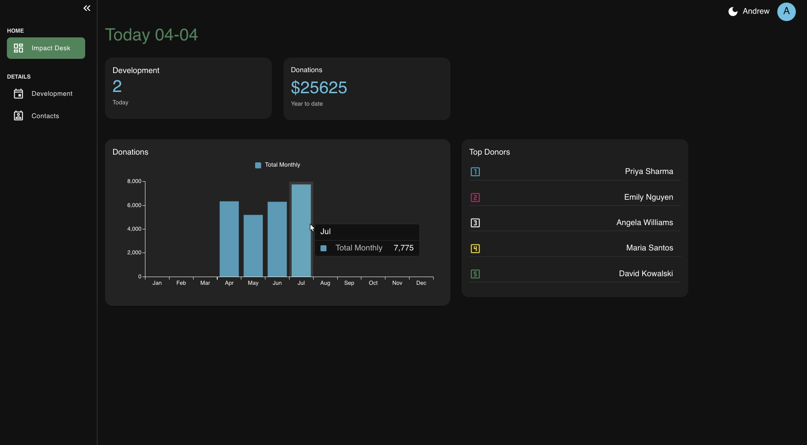
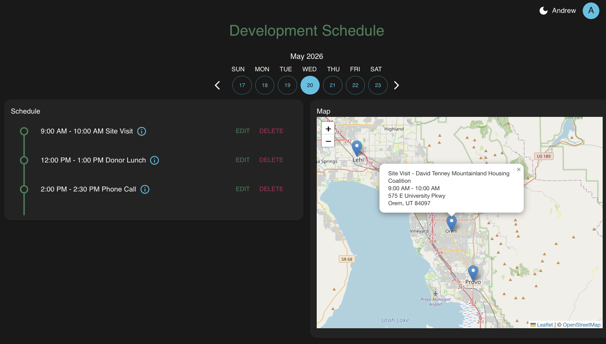

Impact Desk

ImpactDesk is a fundraising activity planner for nonprofit fundraising managers and development staff who need to organize donor meetings, visits, and events more efficiently. Users schedule relationship-building activities, filter them by day, and view addresses on an interactive map to plan routes.
Solo project, built as my Code Platoon capstone. React frontend with Material UI and React Leaflet, Django REST Framework backend, PostgreSQL, deployed on AWS EC2 with Docker.
GitHub Live DemoPurpose and Goal
I've done nonprofit fundraising work, and tracking donor relationships, scheduled visits, and event logistics across spreadsheets and calendars gets messy fast — especially the visual piece of seeing where everyone is and planning a route between them. Working with nonprofits and churches over the years through trainings, meetings, and conversations gave me a clearer picture of what fundraising and development staff actually need day-to-day.
I researched the role specifically before scoping the build — including how outreach actually breaks down day-to-day, which is why scheduling and routing are the app's center of gravity rather than donor data.
I started with a planning document, a defined Minimal Viable Product(MVP), and rough page sketches before writing code.
Spotlight
The hardest part of building the development scheduling page wasn't the core functions — it was the form. I designed it to handle scheduling, location lookup, contact linking, and validation in one screen, with twelve inputs total. The scope created cascading bugs, but the bigger problem was one I only saw after completing.
Scheduling doesn't happen all at once in real life. A fundraiser knows the contact's name today, sets a meeting time tomorrow, and confirms the address sometimes a day before. One data model paired with one form was a good beginning, but it forced a person to know everything upfront. I'd redesign it now to match the actual workflow — partial records that fill in over time, with nullable fields and a plan for an "in-progress" state. It's a data model problem, not just a form problem.
Lessons Learned

Two things I'd carry forward from this build: features are bigger than they look, and frontend choices are often backend choices in disguise.
Getting a map onto the screen is its own engineering problem. So is putting markers on it, adding address search, handling geocoding, and drawing routes. The apps I use every day — Reddit, Google Maps — are built from thousands of those small steps, each one solved separately. That changes how I plan now: decompose first, estimate from the parts, and finish one piece before starting the next. Every "small addition" interacts with what's already there.
Same principle on the frontend-backend split: I added geocoding to the development form thinking of it as a UX feature, and it turned into a backend conversation about coordinate fields, rate limits, and failure handling. The earlier I think about where the work actually lives, the cleaner the integration.